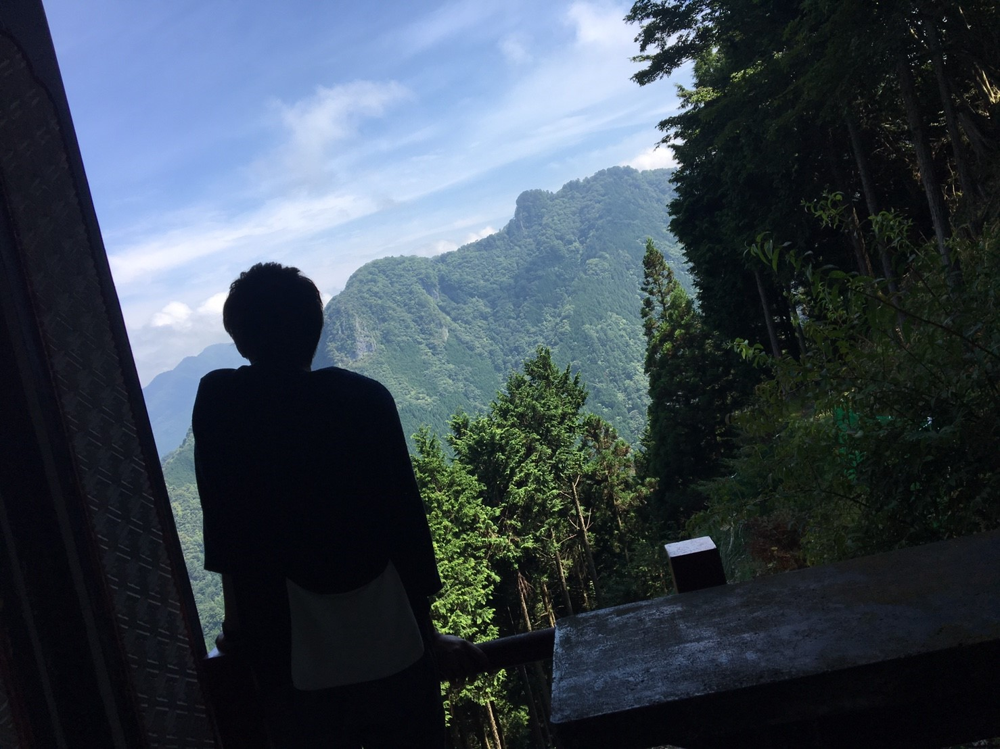

佐藤錬です。1997年生まれの丑年です。
ーーーーーーーーーー 学校 ーーーーーーーーーー
現在大学4年生をしてます。
研究室ではインタラクティブメディアについて勉強中…
ーーーーーーーーーー 趣味 ーーーーーーーーーー
趣味は音楽でよくバンドのライブや夏フェスに行ったりします。
バンドはUVERworldが好きで2017年に行われた男性限定のライブで23000人で行った男祭りにも参加してます！
他にもカメラや旅行、温泉にアウトドアも好きで毎年、多くの旅行に行ったりアウトドアをしています。
あとはハリネズミ飼ってます!